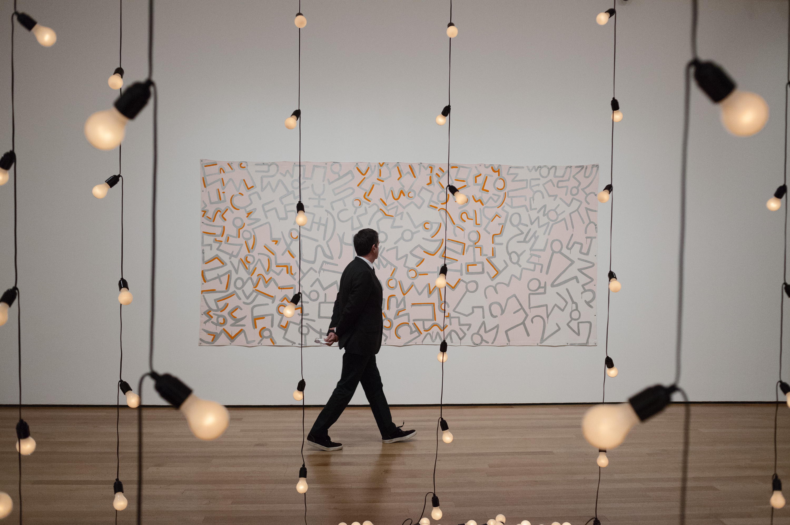
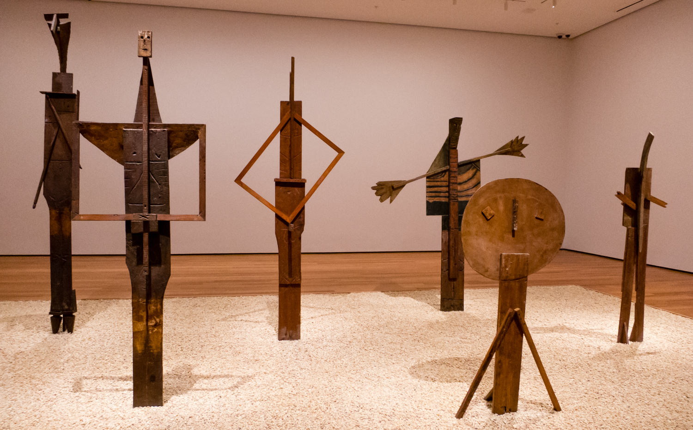

Moma
Hours
Saturday- Thursday10:30 a.m.–5:30 p.m. Friday
10:30 a.m.-8:00p.m.
Exhibitions
Marcel Broodthaers: A Retrospective Through Sunday, May 15
A Japanese Constellation: Toyo Ito, SANAA, and Beyond Through Monday, July 4
Soldier, Spectre, Shaman: The Figure and the Second World War Through Sunday, April 3
Scenes for a New Heritage: Contemporary Art from the Collection Through Monday, April 11
Ernie Gehr: Carnival of Shadows Through Saturday, April 30
Jackson Pollock: A Collection Survey, 1934–1954 Through Sunday, May 1
Projects 102: Neïl Beloufa Through Sunday, June 12
THE ELECTRO-LIBRARY: European Avant-Garde Magazines from the 1920s Through Monday, June 13
Edgar Degas: A Strange New Beauty Through Sunday, July 24
Member Early Hours
Rachel Harrison: Perth Amboy Through Monday, September 5
From the Collection: 1960–1969 Through Sunday, March 12, 2017
Gustav Klimt’s Adele Bloch-Bauer II Ongoing
Painting & Sculpture I Ongoing
The Modern Monument Ongoing
Review: Picasso, Completely Himself in 3 Dimensions
